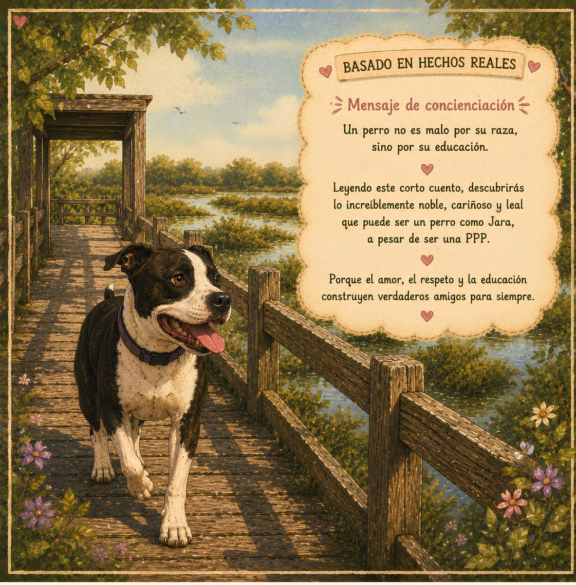
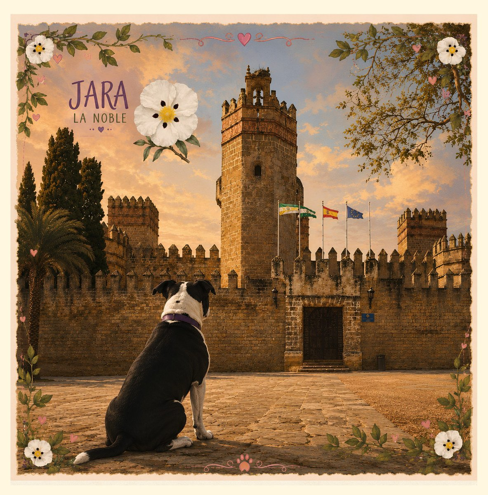
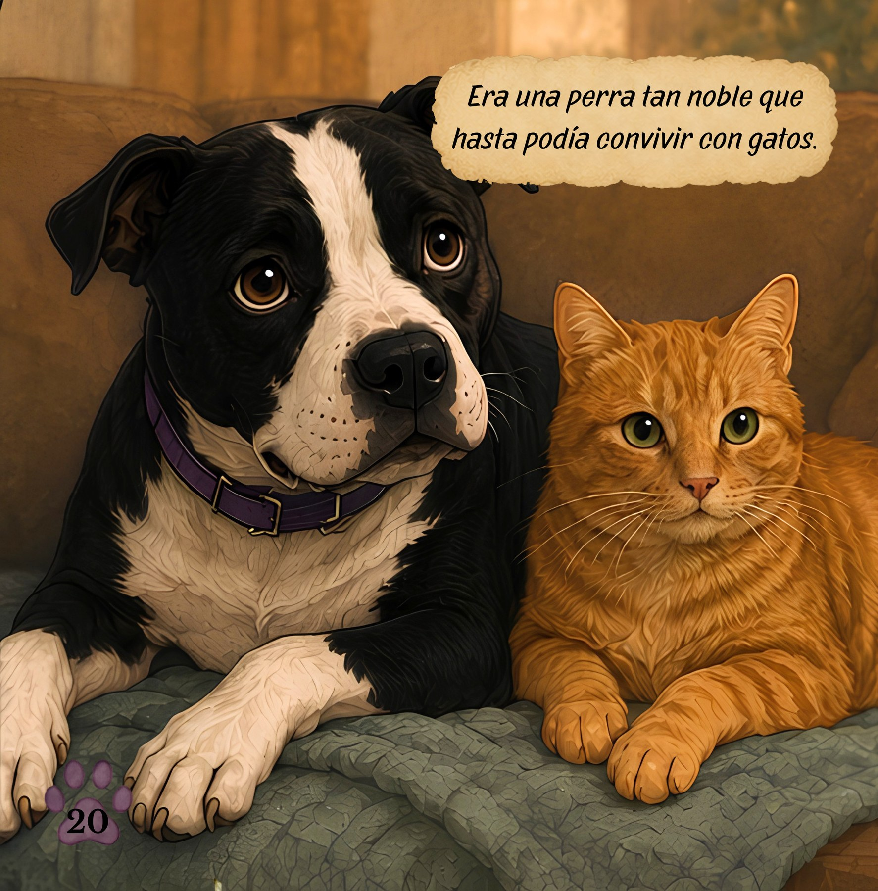

Accueil › Mes livres › Jara, la noble PPP

Une histoire inspirée de faits réels
Jara,
la noble PPP
Jara est une chienne qui nous montre qu'il ne faut jamais juger sur les apparences.
Car l'amour, le respect et l'éducation construisent de véritables amis pour la vie.
Ce n'est pas son apparence qui compte.
C'est son cœur.
ACHETER SUR AMAZON →
📖 Ce livre est actuellement disponible uniquement en espagnol.
Dans l'histoire
Découvrez Jara
Une petite fenêtre sur l'univers de Jara. Voici quelques pages et illustrations du conte.



Une histoire avec du cœur
Un conte pour parler d'empathie, d'éducation et de l'importance de connaître avant de juger. Jara est une chienne PPP, mais surtout elle est affectueuse, loyale, protectrice, intelligente et noble.
Un conte pour petits et grands qui rappelle que les apparences ne racontent jamais toute l'histoire.